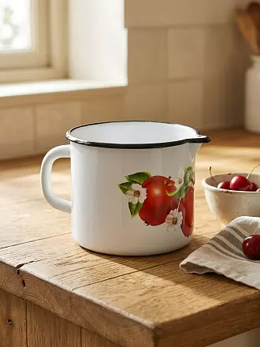
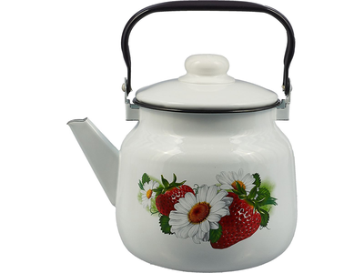
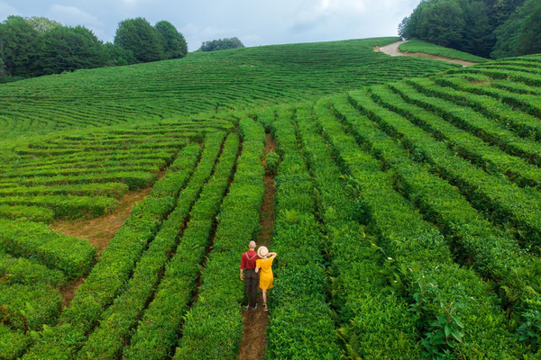

Главная
|
Сорта чая
|
История чая
|
Заваривание
|
Чайная посуда
|
Контакты
|
Заказ чая
|
DOM: чтение
|
DOM: латиница
|
Задача 1008
|
Зелёный чай (закладка)
|
Чай в Википедии
Чайная посуда
Навигация по странице:
Раздел 1. Чайники
|
Раздел 2. Чашки и пиалы
Раздел 1. Чайники
Чайники бывают из разных материалов.
Фарфоровые
Глиняные
Исинская глина
Обычная керамика
Стеклянные
Металлические

Рисунок. Чашка с ручкой.
К началу
Раздел 2. Чашки и пиалы
Что нужно для чаепития:
Чашка с блюдцем
Пиала
Маленькая — для улуна
Большая — для зелёного чая
Ложка и сахарница
Таблица
Изображение
Описание
Ссылка

Чайник
История чая

Чайная плантация. Нажмите на миниатюру — откроется большое изображение 600×400 в новой вкладке.
Чайный куст (Википедия)
К началу
Попов Станислав, 2007 г.р., группа Марширова В. В.